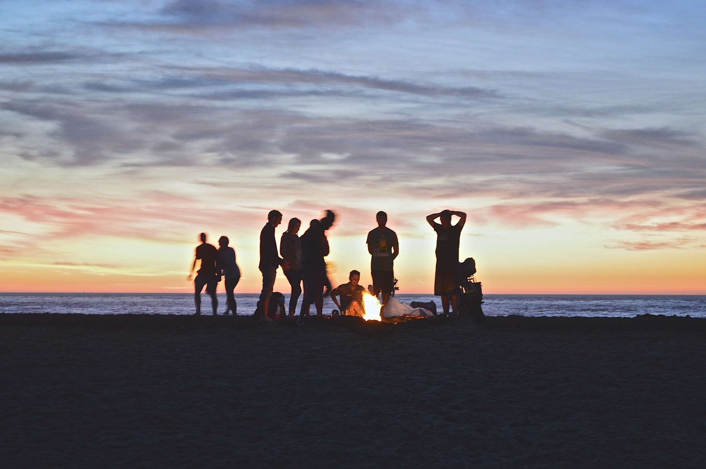

The story of our formation to where we are today
The MQT Backcountry adventurers club is a group of outdoor enthusiasts from Marquette County of the beautiful Upper Peninsula of Michigan. The history of the group is somewhat unknown, but was formed on the common bond of a love for the outdoors and the idea that there was a need for a local presence of nature stewardship.
Today the group has grown to more that 80 members from a diverse background. The group is comprised on nurses, doctors, lawyers, farmers, DNR game wardens, local business onwers and many more. We meet monthly to go over the Club's annual fundraising event's and to plan different activities throughout the year aimed to build community engagement with our local outdoor activites.
Please feel free to contact us about joining the group or finding out more information.